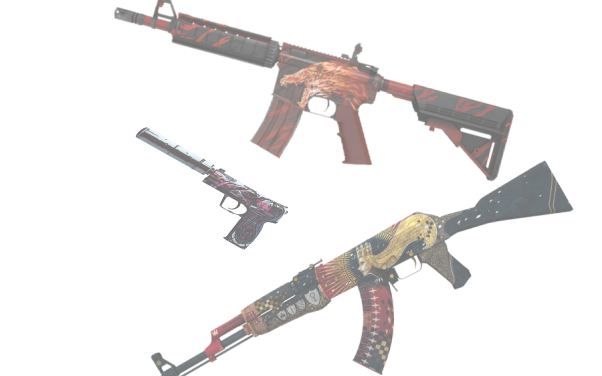
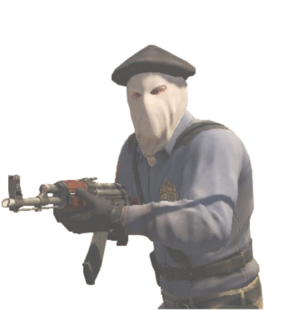
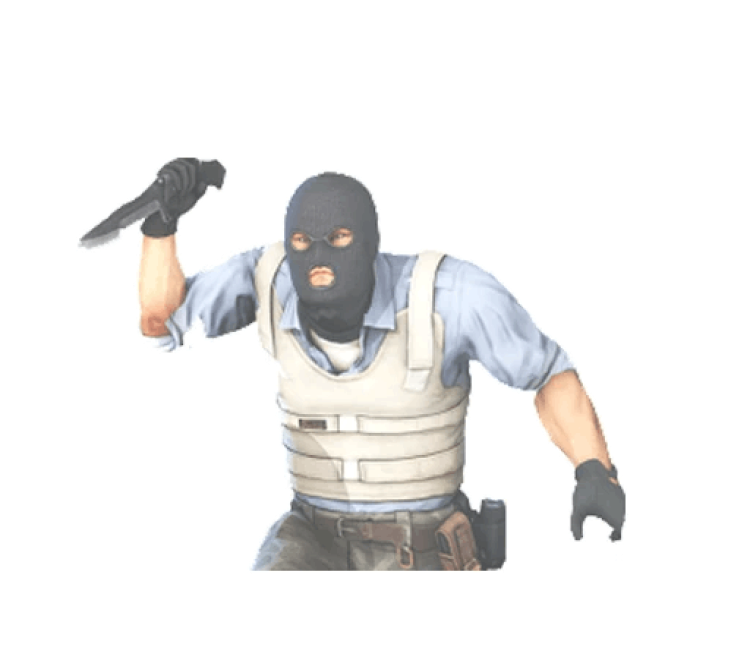

ПЕРЕДВИЖЕНИЕ
Скорость в CS:GO измеряется в блоках в секунду (б/с) и зависит от снаряжения, которое вы держите в руках. С ножом и бомбой в руках модель игрока передвигается со скоростью 250 б/с, с АК-47 со скоростью 225 б/с, с любыми пистолетами кроме Desert Eagle(230 б/с) - 240 б/с. Для максимально эффективного передвижения по карте следует держать нож в руках, но не перебарщивайте с этим.
Скорость в CS:GO измеряется в блоках в секунду (б/с) и зависит от снаряжения, которое вы держите в руках. С ножом и бомбой в руках модель игрока передвигается со скоростью 250 б/с, с АК-47 со скоростью 225 б/с, с любыми пистолетами кроме Desert Eagle(230 б/с) - 240 б/с. Для максимально эффективного передвижения по карте следует держать нож в руках, но не перебарщивайте с этим.


СТРЕЙФЫ и КОНТР-СТРЕЙФЫ
В шутерах стрейфом называют непрекращающееся движение игрока вправо-влево. Он с одной стороны усложняет попадание по вам, а с другой позволяет стрелять практически на ходу. В игре существует механика подобная инерции, то есть, когда игрок отпускает клавишу передвижения модель двигается еще какое-то время, а значит разброс оружия будет считаться как в движении. Тут нам на помощь приходит так называемая механика контр-стрейфинга. Чтобы погасить инерцию нужно нажимать клавишу движения в противоположную сторону.
В шутерах стрейфом называют непрекращающееся движение игрока вправо-влево. Он с одной стороны усложняет попадание по вам, а с другой позволяет стрелять практически на ходу. В игре существует механика подобная инерции, то есть, когда игрок отпускает клавишу передвижения модель двигается еще какое-то время, а значит разброс оружия будет считаться как в движении. Тут нам на помощь приходит так называемая механика контр-стрейфинга. Чтобы погасить инерцию нужно нажимать клавишу движения в противоположную сторону.
БАНИХОП
Банихоп — метод последовательных прыжков из стороны в сторону, позволяющий ускоряться во время движения. Трюк основывается на технике Strafe Jumpа, которая делает перемещение персонажа плавнее и быстрее, чем при обычном беге с ножом.
Банихоп — метод последовательных прыжков из стороны в сторону, позволяющий ускоряться во время движения. Трюк основывается на технике Strafe Jumpа, которая делает перемещение персонажа плавнее и быстрее, чем при обычном беге с ножом.
